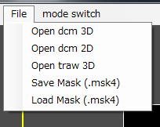

RoiPainter4D I/O

RoiPainter4D I/O Visualization Segmentation Refinement
I/O in RoiPainter4D
RoiPainter4Dでのデータの読み込みと書き出しについての説明です．

Open data
D-1) file > Open dcm 3D
D-2) file > Open dcm 2D
D-3) file > Open traw 3D
Save and Load mask
M-1) file > Save Mask(.msk4)
M-2) file > Load Mask(.msk4)
D-1) file > Open dcm 3D
D-2) file > Open dcm 2D
D-3) file > Open traw 3D
Save and Load mask
M-1) file > Save Mask(.msk4)
M-2) file > Load Mask(.msk4)
Open data
D-1) file > Open dcm 3D
- 3次元Dicom画像（ひとつのDicomファイルで3次元画像を保持する形式）を読み込みます．
D-2) file > Open dcm 2D
- Dicom スライス画像を読み込みます．実装にはDCMTKを利用しています．
D-3) file > Open traw 3D
- 独自形式 traw3d_ss ファイルを読み込みます． このファイルは，ピッチ情報を持ち，一つの画素をsigned short（16bit）として保持します． データフォーマットの詳細は，こちらを参照してください．
Save and Load mask
M-1) file > Save Mask(.msk4)
- 作成したマスクデータを独自形式（.msk4）で保存します．
M-2) file > Load Mask(.msk4)
- マスクデータ（.msk4）を読み込みます．作成中のマスクデータが上書きされるので注意してください．
※積み重ねる方向によっては鏡面反転したものが出力されます．